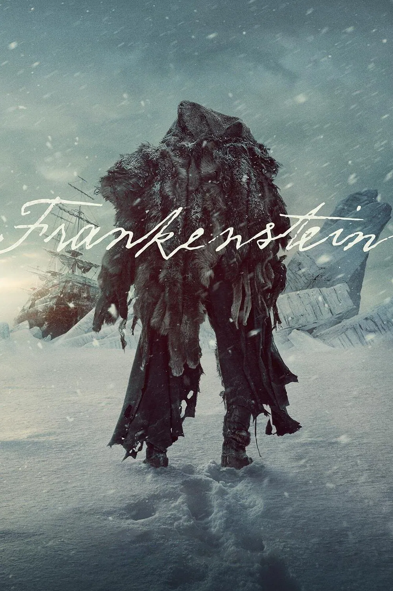

Мировая премьера: 7 ноября 2025
Слоган: Только монстры играют в бога.
Сюжет: Блестящий, но самовлюблённый учёный Виктор Франкенштейн проводит жестокий эксперимент, в результате которого ему удаётся оживить мёртвое тело, что в конечном итоге приводит к краху как самого творца, так и его несчастного создания.
Режиссёр: Гильермо Дель Торо
В основе: Роман Мэри Шелли "Франкенштейн, или Современный Прометей" (Великобритания, 1818)
В ролях: |
Оскар Айзек | Барон Виктор Франкенштейн |
| Джейкоб Элорди | Существо | |
| Кристоф Вальц | Генри Харландер | |
| Миа Гот | Элизабет Харландер / Клэр Франкенштейн | |
| Феликс Каммерер | Уильям Франкенштейн | |
| Дэвид Брэдли | Слепой старик | |
| Ларс Миккельсен | Капитан Андерсон | |
| Чарльз Дэнс | Барон Леопольд Франкенштейн | |
| Кристиан Конвери | Юный Виктор Франкенштейн | |
| Николай Ли Кос | Офицер Ларсен | |
| Ральф Айнесон | Профессор Кремпе | |
| Бёрн Горман | Палач |
Бюджет: $ 120 млн.
Кассовые сборы в мире: $ 0.1 млн.
Продолжительность: 2 ч. 22 мин.
Рейтинг: 7.5